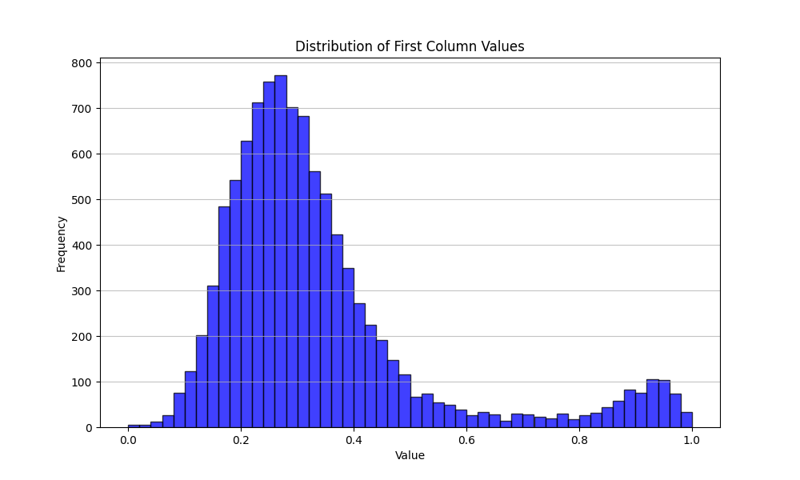

Cellular automata rule search
- When
- 2024
- Stack
- Java (simulation), Python: pandas, scikit-learn, Keras/TensorFlow, matplotlib
- Code
- Private for now; available on request
The problem
In a 3-state automaton each cell looks at its neighbors and picks its next state from a set of rules. Each rule is written as 6 base-3 digits, so there are 36 = 729 possible rules, and every run uses a set of 243 of them. That space is far too big to explore by hand, and almost every random rule set produces noise.
What I built
Simulation and scoring
A Java program generates a random rule set, runs it for 500 steps on a random grid, and scores how much stable structure appears using a heuristic I designed. I ran 10,000 rule sets and saved each score with its rules to CSV.

Learning what makes a rule set stable
Each rule set became a 729-long binary vector (which rules it contains). I labeled the top 16% of scores as the high-stability group and trained a Keras network (dense layers with dropout and early stopping) to predict it, then used the model to score new rule sets without simulating them.
What I learned
The bimodal distribution was the interesting result: stability isn't a smooth scale, there's a distinct group of rule sets that behave differently. The network was useful for ranking candidates, but turning its output back into new rules was harder than expected, because the model doesn't capture the constraints between rules.